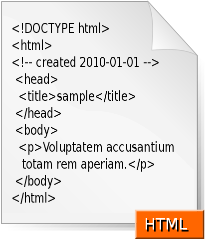

— это монтаж полос оригинал-макета из составных элементов: набранного текста, заголовков, таблиц, иллюстраций, украшений и пр. Также результат этого процесса, то есть готовые полосы. Эта операция включает в себя формирование книжных, журнальных или газетных полос определенного формата.
HTML
— это стандартизированный язык гипертекстовой разметки документов для просмотра веб-страниц в браузере.
IDE (редактор)
— это система программных средств, используемая программистами для разработки программного обеспечения. IDE (англ. Integrated Drive Electronics) — параллельный интерфейс подключения накопителей (жёстких дисков и оптических приводов) к компьютеру.

Пример кода на HTML
Код
— это взаимно-однозначное отображение конечного упорядоченного множества символов, принадлежащих некоторому конечному алфавиту, на иное, не обязательно упорядоченное, как правило более обширное множество символов для кодирования передачи, хранения или преобразования информации.
Сайт
— это веб-страница или группа веб-страниц, объединённых единой темой, автором, фирмой и т. п.